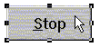

Australian Toolbook User Group


The idle message is a fantastic message to intercept when you want to get things done as a background process.
Sometimes though, you may not get an idle message if the focus of the program is somewhere strange, so a peroidic timer should also be considered as a way to trigger code whilst the user of your program is doing something else.
Ways to interrupt processing Solution by Carl Steinhilber

Question: Is there a script I can put in a button so that a user can get back control, whatever script is being executed. I tried mmClose all, but this works only on multimedia files. What if I have a script going that includes many step loops, etc. I need a script that will always work and interrupt any script I am running.
Answer: Unfortunately, you're looking at this from the wrong way around :) The trick is not "can I interrupt a script with step loops", but, rather, "can I create scripts with steps that can be interrupted". You CAN create a loop such as:
global logical exitProcess
exitProcess = FALSE
step i from 1 to 100000
-- do something
yieldApp()
if exitProcess then
break step
end
end
then, on your button you wish to let interrupt the process:
to handle buttonClick
global logical exitProcess
exitProcess = TRUE
end
But this is not good practice. And, particularly in Toolbook, you probably will not love the reliability or response time. The reason is the system is trying to execute the steps as fast as possible... and is doing it's best to ignore other system events (such as mouse clicks, etc). The only way to get it to pay any attention whatsoever to these other things is to execite a yieldApp() method... but, unfortunately, this causes Toolbook to pay attention to ALL the system events that may have been accumulating while the step loop was processing.
It would be better to write the stepping script in such a way that it never lets all these events accumulate to be processed all at once, but rather process them as they come in. One way to accomplish this that I'm fond of using (Ian will probably kick me for this), is to use a timer or the idle handler to handle the looping.
In the handler that initiates the loop process, instead of having a step event, simply set a book property:
set the doMyProcess of this book to TRUE
Then, create an idle handler:
to handle idle
if (the doMyProcess of this book) then
-- do stuff
end if
end idle
Then, use a script for the interrupt button similar to the one above:
to handle buttonClick
set the doMyProcess of this book to FALSE
end
Since the idle handler (and timer handlers) will only fire when the system has finished processing other messages, your buttonClick on the interrupt button is recognized much more efficiently and quickly than with the step loop above. And since the system can process event practically at will, the event queue will usually only have a single event in it to process at any one time... so it really doesn't slow things down all that much (though you will notice SOME degradation).
The trick is to think of virtually everything that happens in Windows as an "event". And instead of a buttonClick being sent right to Windows to get processed, it's actually thrown onto a queue or "stack" (much like a Toolbook stack). And even multitasking doesn't negate the fact that the events in this stack must be processed one at a time... and usually in the order that they were put into the stack (first in, first out). So in the example script above that uses the step loop, while that loop is processing Windows is not looking at events in that stack. So it will start to build up like:
"update system time"
"move cursor"
"hilight text"
"check serial port"
"beep speaker"
:
And when you click on the interrupt button, of course that mouse click is thrown in after the last item of the stack. So by the time yieldApp() is called, all the other system events must be processed before the buttonClick is even seen.
But if you use the timer or idle handler, and the system is continually able to process the event stack... Windows will "see" the buttonClick MUCH quicker, and the reaction time will be much more desirable.
Idle handler causing slow response Solution by Chris J. Carden , Asymetrix
The problem with checking the mmStatus in the idle handler is that, because the idle comes so fast, most of the CPU resources are burnt up just checking. The best way to tell if the clip has ended is to use the "notify" option. If that doesn't work for your situation, put some 'mmYield' commands in the idle handler or add a delay so that you only check once every second or two.
Checking the status of a checkbox periodically
Question: I am using a script in a page to determine if the checked of a button is true or false and to then show a pict based on the status of the checked. The problem is, I am using the idle handler. Any other handler such as buttonclick only gives the result I want if the page is the reciever of the buttonclick. Other objects on the page CAN effect the checked status. I need a script that allows the page to recieve the checked status no matter how the checked status was invoked.
You could forward your buttonClick handler, then the page would receive it.
Try a timer that checks the status of the button every 1/2 second (much less time intensive than the idle).
Try
notifyafter buttonClick
I have used this before.
Initiating a slideshow when the user has been idle for 15 seconds
With Toolbook can I have 20-30 different clips playing in serial order at idle time? I want after 10-15 secs of idle, the application go to first page and then play 20 clips one by one.
In Human Script:
Hey nobody uses me for 15 seconds ok go to first page play video "who" is video "who" finished? play video "who2" end
Yes you can, but using mmplay with a Notify handler to queue up the next clip. Look at the syntax for the mmPlay command and you will see the Notify parameter.
Question: I was talking about 20-30 different clips.The notifier seems to be work only with one (clip).
Here is the *Open*Script [ I currently have which I want someone to enahnce ]:
to handle EnterPage
mmOpen clip "test1"
mmPlay clip "test1" in stage "video" notify self
end
to handle mmNotify cRef, cCommand, cResult
if cRef = clip "test1" and \
cResult = "successful" then
mmPlay clip "test2" in stage "video" \
notify self
if cRef = clip "test2" and \
cResult = "successful" then
mmPlay clip "test3" in stage "video" \
notify self
if cRef = clip "test3" and \
cResult = "successful" then
mmPlay clip "test4" in stage "video" \
notify self
if cRef = clip "test4" and \
cResult = "successful" then
mmPlay clip "test5" in stage "video" \
notify self
end if
end if
end if
end if
end
Any suggestions?
to handle enterPage
my counter = 0
send MMNotify
forward
end
to handle MMNotify
increment my counter
conditions
when my counter = 1
mmPlay clip "firstone" in stage "foo" \
notify self
when my counter = 2
mmPlay clip "secondone" in stage "foo" \
notify self
when my counter = 3
...
...
...
end
end
NOTE: This is untested, but should work without much modification.
To access thousands more tips offline - download Toolbook Knowledge Nuggets